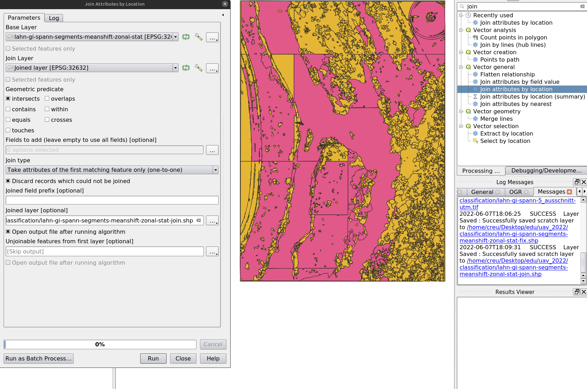
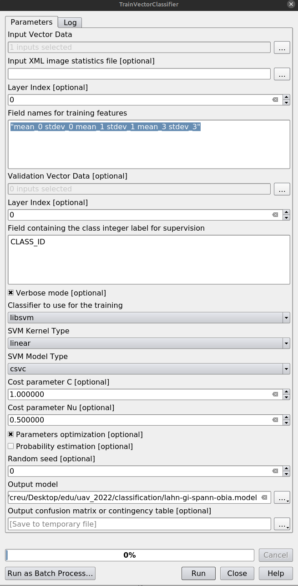
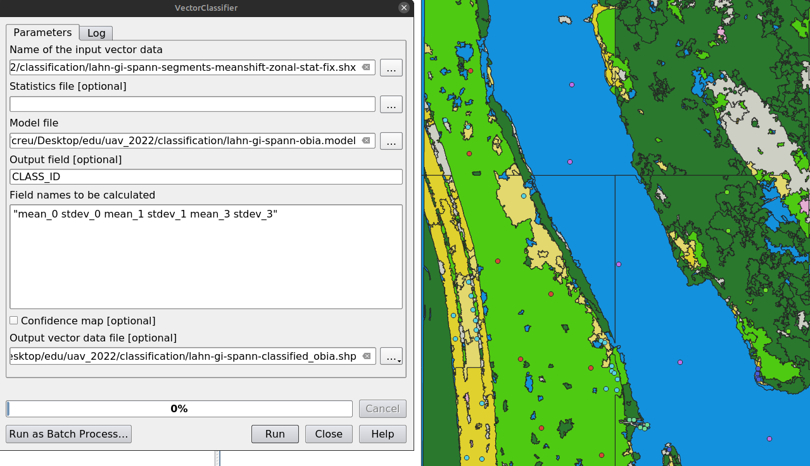
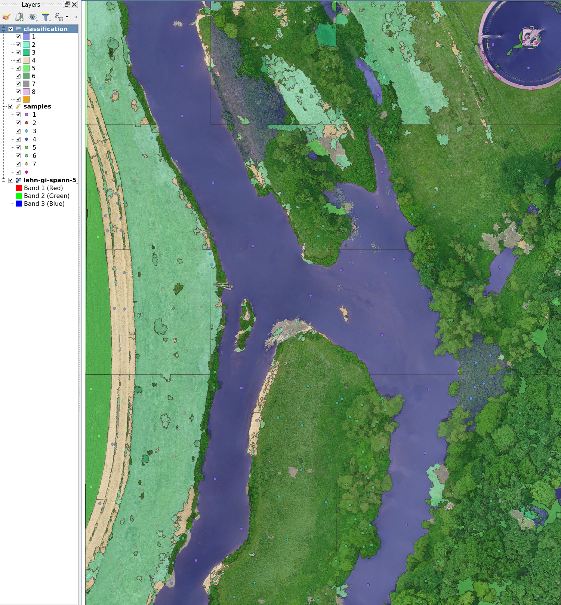

OBIA Workflow for QGIS step by step
Object-based Image Analysis (OBIA)
With UAV image data, which often have high spatial resolution but minimal spectral resolution, a shift in analytical thinking is required. Instead of classifying individual pixels, it is often more effective to identify meaningful objects. The core principle is: segment first, then classify.
General Workflow
The example illustrates a typical OBIA classification procedure:
- Data acquisition: orthophoto and training data.
- Generation of spatial segments.
- Extraction of descriptive features.
- Model training.
- Classification of the input dataset.

For reference, download the base dataset and the QGIS model.
Save the project beforehand, for example as obia_test, to keep relative paths stable. Manually delete intermediate files before each run and avoid relying on temporary files.
Step 1: Create Training Sample Points
Create a point vector file and digitize the following classes:
| class | CLASS_ID |
|---|---|
| water | 1 |
| meadows | 2 |
| meadows-rich | 3 |
| bare-soil-dry | 4 |
| crop | 5 |
| green-trees-shrubs | 6 |
| dead-wood | 7 |
| other | 8 |
Provide at least 10 widely distributed sampling points per class and save the file as sample.gpgk.
Step 2: Segmentation
In the QGIS Processing Toolbox, run Segmentation with the Mean-Shift algorithm. Inspect the resulting segments and adjust parameters if the result is unsatisfactory.
Step 3: Feature Extraction
Use ZonalStatistics under OTB image manipulation to extract features.

Step 4: Join Training Data with Segments
Use Join Attributes by Location to join training samples with segmented objects.

Step 5: Training
Use TrainVectorClassifier, select the feature fields, set CLASS_ID as the class field, choose libsvm, and enable parameter optimization.

Step 6: Classification
Use VectorClassifier, load the output vector into QGIS, and apply a style.


Result
You should now see a mostly well-classified result, with some expected misclassifications.
Questions for reflection:
- What could cause the misclassifications?
- What are the weaknesses of this approach?
- How could the results be improved?